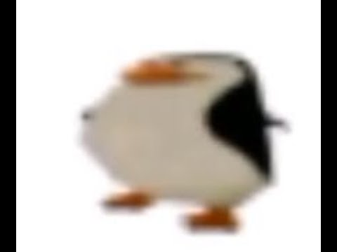

Ce texte n'est là que pour apprendre comment marche le Java Script. Ici le texte devrai être en gris si on lui click dessus. Celui là devrait être marron en passant la souris dessus. Et lui, bleu si on double click. Finalement, tous les changements sont présents dans cette phrase.
Masayoshi Takanaka (高中 正義, Takanaka Masayoshi) est un guitariste, compositeur et producteur musical japonais né le 27 mars 1953 à Tokyo au Japon. Sa musique a été très influente dans les années 1970 et 1980, notamment dans les milieux liés à la city pop.
Nous allons complètement modifier ce paragraphe.

Sincèrement, ce TP est le meilleur que j'ai fais jusque là.